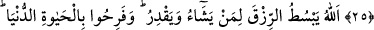
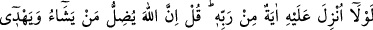
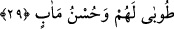

KÂLBLER ANCAK
ALLAH’I ANMAKLA
HUZUR BULUR
25. Allah’a verdikleri sözü kuvvetle pekiştirdikten sonra bozanlar, Allah’ın riâyet
edilmesini emrettiği şeyleri (akrabalık bağlarını) gözetmeyenler ve yeryüzünde
fesad çıkaranlar; işte lânet onlar içindir. Ve kötü yurt (cehennem) onlarındır.
26. Allah dilediğine rızkı bollaştırır da daraltır da. Onlar dünya hayatıyla
şımardılar. Oysa âhiretin yanında dünya hayâtı, geçici bir faydadan başka bir şey
değildir.
27. İnkâr edenler diyorlar ki: “Rabbinden ona bir mûcize indirilmeli değil miydi?”
De ki: “Şüphesiz Allah dilediğini saptırır, kendisine yöneleni de hidâyete erdirir.
28. Onlar, îman eden ve Allah’ı anmakla kalbleri huzur bulan kimselerdir. İyi bilin
ki, kalbler ancak Allah’ı anmakla huzur bulur.
29. İman edip iyi işler yapanlara ne mutlu! Varılacak güzel yurt da onlar içindir.
“Allah’a” tâat ve îman edeceklerine dâir “verdikleri sözü” ikrâr ve kabul ederek
“kuvvetle pekiştirdikten sonra bozanlar,” ki onlar kâfirlerdir.
Buradaki söz, Cenab-ı Hakk’ın kendilerini Âdem’in sırtından çıkartarak tevhid ve
ubûdiyyet hususunda ahid aldığı sırada Allah’la aralarında vâkî olan antlaşmadır.
Nitekim Allah Teâlâ şöyle buyurmuştur: “Ey Âdem oğulları! Size şeytana tapmayın,
çünkü o sizin apaçık düşmanınızdır” diye and vermedim mi?” (Yâsin, 36/60)
İki tane sözleşme vardır: Biri muhabbet üzere verilen söz, öteki de kulluk üzere